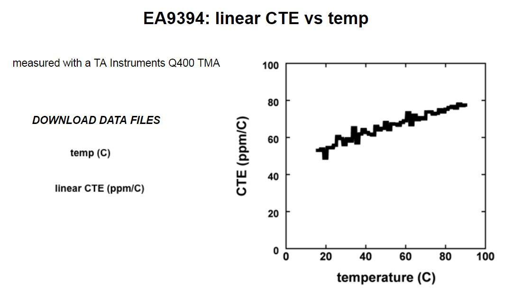

Ref : https://www.researchgate.net/publication/252981484_Mechanical_properties_of_Hysol_EA9394_structural_adhesive
http://www.sandia.gov/polymer-properties/9394-CTE_vs_temp.html
http://citeseerx.ist.psu.edu/viewdoc/download;jsessionid=3D4F0216F12D6CFD2C1AB4DEEA094D1D?doi=10.1.1.539.351&rep=rep1&type=pdf
Hysol EA9394 adhesive is considered elastic-plastic with E = 4.32 GPa, ν = 0.35, and σ Y (yield strength) = 15.1 MPa. The stress-strain curve for Hysol EA9394 adhesive is taken from Sandia report [32]. Fully integrated plane strain elements were used for all cases.

Dexter Corporation’s Hysol EA-9394 is an amine-cured epoxy paste adhesive with analuminum powder filler. This adhesive combines high temperature performance with strengthand toughness; it can be cured at room temperature. Specimens in this study are cured at roomtemperature for a minumum of seven days prior to testing and all mechanical tests are performedat room temperature (S220C). The adhesive has a density of 1.38 g/cc, a porosity of abcut 6°/0, aglass transition temperature of 82°C and a coefficient of thermal expansion of approximately 60x 10-6 ‘DC-l(between -30°C and 70”C).